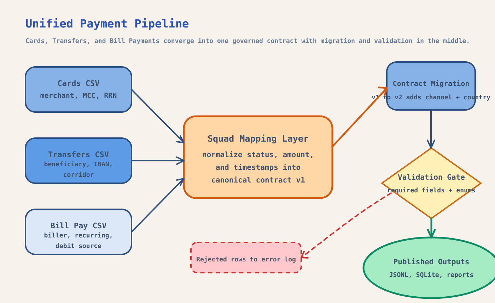
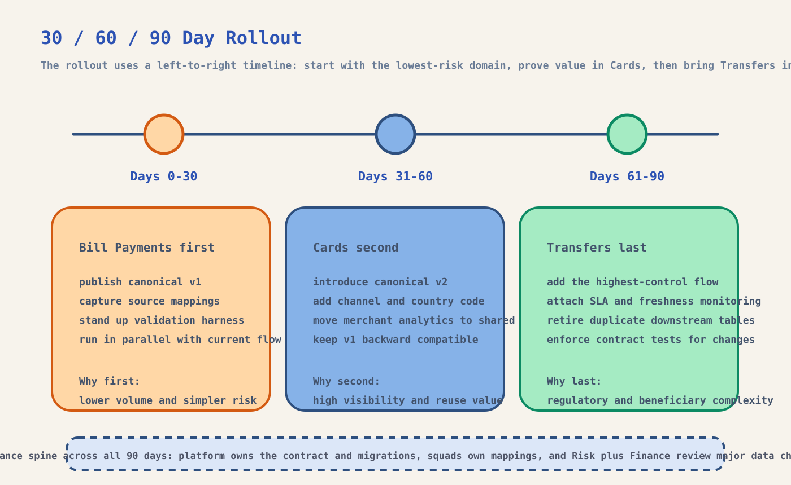

This document explains not just the target architecture, but also the reasoning behind it. The core idea is to unify Mal's Cards, Transfers, and Bill Payments data in a way that is practical to adopt, easy to govern, and safe to roll out in phases.


The first decision was whether to optimize for modeling purity or for adoption speed.
My starting point was simple: all three Mal squads are producing payment events, but each one does it in its own format. If the business wants shared reporting, better controls, and faster downstream analytics, the platform should not ask every consumer to understand three different schemas. It should absorb that complexity once and publish one canonical contract.
That thinking led me to a flat canonical payment model instead of a deeply normalized design. In a larger production platform, I might separate payment facts, parties, merchants, lifecycle history, and operational events into multiple related tables. For this rollout, though, that would slow adoption. A single reusable row per payment event is much easier for Finance, Risk, CRM, and Analytics teams to query immediately.
I also kept product-specific details such as merchant_name, counterparty_id, and biller_code as optional fields inside the same contract. The trade-off is that the model is less academically pure, but it is much more practical for a first shared platform release. My goal here is not perfect modeling on day one. My goal is fast standardization with low adoption friction.
The pipeline is designed to centralize standardization while leaving source ownership with the squads.
The architecture follows the same logic. Each squad keeps ownership of its raw extract, but the platform owns the mapping layer, validation layer, contract migration, and published outputs. I made that choice because ownership should sit where change can be managed consistently.
The mapping layer is the key control point. This is where squad-specific fields are translated into the shared contract, where status semantics are normalized, and where timestamps and amounts are made consistent. Once that common layer exists, version migration becomes much easier because the platform can move records from v1 to v2 centrally instead of asking every squad to upgrade at the same pace.
Validation sits after migration because I want the final published dataset to represent the latest governed contract. In other words, squads can continue producing older-compatible versions for a period of time, but the platform is responsible for publishing only well-formed records in the latest usable shape. Rejected rows go to an error log rather than disappearing silently, which makes operational follow-up possible.
I treated rollout sequencing as a risk-management decision, not just a project plan.
That is why I would move Bill Payments first. It is usually lower volume, structurally simpler, and less sensitive than cards or outbound transfers. If the shared model or validation process needs adjustment, Bill Payments is the safest place to learn. The first 30 days should focus on publishing canonical v1, documenting source mappings, and running the shared pipeline in parallel with current squad outputs.
Cards should come second. My reasoning is that Cards creates visible business value quickly. It usually unlocks merchant analysis, channel-level trends, and cross-border insight faster than the other domains. This is also the right moment to introduce v2 of the contract with fields like channel and country_code. I would still keep the migration backward compatible so squads can emit v1 while the platform upgrades records during ingestion.
Transfers should come last. This is not because they are less important, but because they often carry the highest controls burden. Beneficiary semantics, sanctions context, and cross-border reporting make transfers the least forgiving domain for an early rollout mistake. By pushing them into the final phase, the platform already has proof that the contract, validation rules, and operating model work.
A shared data platform fails quickly when ownership is vague, so governance has to be explicit.
A shared data platform fails when ownership is vague, so I would make governance explicit from the start. The platform team should own the canonical contract, migration logic, validation library, and release process. Product squads should own extraction quality and mapping correctness for their own sources.
My view on versioning is conservative. Breaking changes should require a major version bump. Non-breaking additions should stay within the same major version. Every contract release should come with a changelog, sample payload, validation rules, and a named owner. That keeps contract evolution understandable instead of turning it into tribal knowledge.
I would also place validation in three layers: source mapping tests, ingestion-time checks, and post-load monitoring. That gives early detection, runtime protection, and production visibility. For a UAE banking context, I would require Risk and Finance to review changes that affect payment status semantics, amount fields, or cross-border attributes, because those are the fields most likely to impact controls and reconciliation.
I would not measure success only by whether the pipeline shipped. I would measure whether the organization is actually moving to the shared platform. The most useful signals are canonical coverage rate, reuse rate across downstream jobs, schema compliance rate, time to onboard a new source, and incident rate tied to data mismatches or delayed loads.
Those metrics tell a much better story than delivery milestones alone. If adoption is low, the contract may be too hard to use. If compliance is low, the mapping or validation rules may be unclear. If onboarding takes too long, the platform is not reducing friction the way it should.
The local implementation is intentionally compact, but the production path is straightforward.
If this moved beyond an assessment-scale implementation, I would shift ingestion to object storage landing zones, orchestrate runs with Airflow or Dagster, and publish to a warehouse-friendly table format such as Delta or Iceberg. I would also add idempotency keys, partitioning by event date, structured logging, and dead-letter handling for rejected rows.
Monitoring would cover freshness, row counts, rejection rates, null-rate spikes, and reconciliation against source totals. For this submission, I intentionally left out full cloud deployment, secrets handling, and a complete semantic warehouse layer so the focus stays on the core platform thinking: standardize the model, roll it out safely, and govern it well.